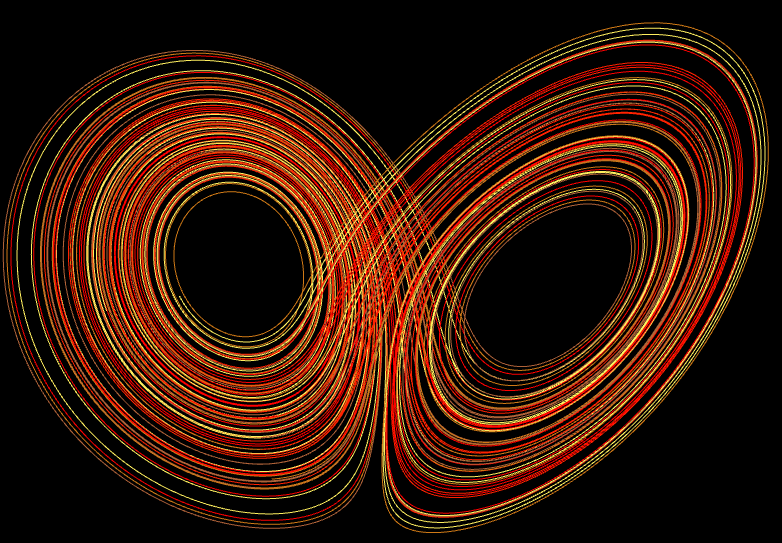
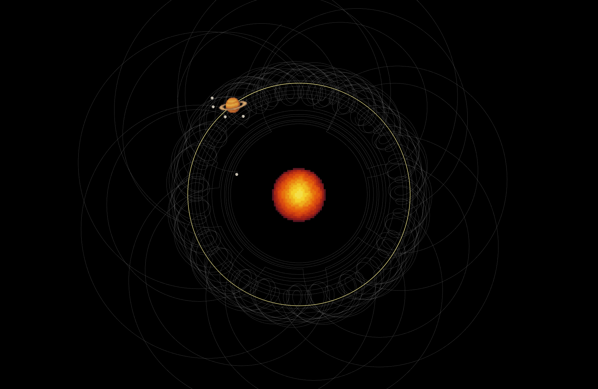

Below are some cool snapshots I captured from adjusting the parameters of my own simulations. Dynamical systems can have some very pretty geometric manifestations, due to the uniqueness of solutions of ODEs. This typically causes these infinitely long parametric curves to draw out some very interesting shapes in a finite space (this is how we also get some fractals). If you would like to generate similar figures, you can go to my Lorenz System simulation page here, and click the red button that says "Click to launch", and vary the \(\sigma\), \(\rho\), and \(\beta\) values above it to get different behaviors. You can click pause when you find an interesting curve and screenshot.
The videos below were rendered offline with my 3D phase space simulation.
The online version does not have a screen recording feature but does have a screenshot feature.
Lorenz System with typical coefficients
De Quan Li Attractor
Chen Lee Attractor
Aizawa Strange Attractor
Three-Scroll Attractor
Halvorsen System
Newton-Leipnik System
Rössler System
Aizawa attractor visualization from my 3D phase space simulation.

3D Lorenz System visualization from my 3D phase space simulation
Aizawa attractor staring into one of its attractors from my 3D phase space simulation
Another 3D Lorenz System visualization from my 3D phase space simulation

Butterfly shaped curve drawn by my chaotic double pendulum simulation
Interesting system given by Saturn with 4 stable moon orbits and one chaotic orbit, generated by n-Body Simulation

Heart drawn by my chaotic double pendulum simulation

Fox-like 3D parametric curve visualized in 2D, produced by
altering the normal coefficients of the Lorenz system.

Flower shape generated by Jupiter's moon's orbit path, produced by n-Body Simulation

Classic 2D visualization of Lorenz system with normal and constant
coefficients. Three trajectories (orange, blue, and red), are started within
0.001 of each other, yet very different trajectories are formed.

Torus drawn out by my chaotic double pendulum simulation
Chemical concentration of two reactive chemicals, generated by my simulation: Turing Patterns

Cool looking solar system generated by, n-Body Simulation

Lorenz Attractor with large orbital amplitudes

Small butterfly
Cat-like mask
Rabbbit drawn by my chaotic double pendulum simulation